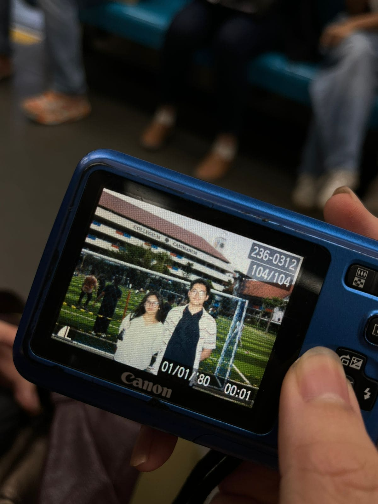

First Time We Hangout in CC
Momen ini memorable banget buat aku, soalnya aku seneng banget pas kamu akhirnya bisa nonton aku perform di CC, dan kamu bisa enjoy lingkungan CC. Walaupun pas itu kita ga deket banget, tapi memori yang aku dapetin itu ga tergantikan. Foto kita yang pertama juga berkesan banget buat aku, karena foto itu sampe sekarang jadi salah satu foto kita berdua yang aku pake terus di wallpaper jam tangan aku, dari pertama kita ketemuan di CC.